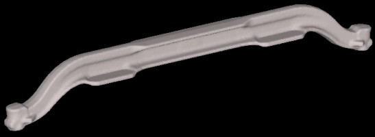
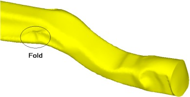
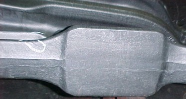
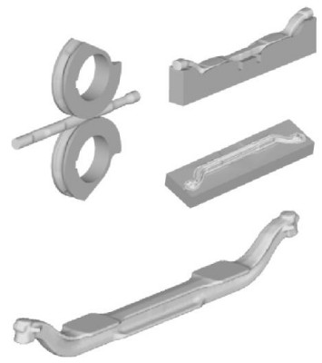
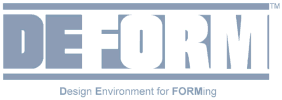

|

Simülasyon
yöntemi, metal þekillendirme alanýnda, deneme yanýlma metoduna
kýyasla sahip olduðu üstünlüklerle mühendislere önemli faydalar
saðlamaktadýr. Tasarlanan üretim süreçlerinin uygulanabilirliðini
test etmek, mevcut üretim süreçlerinde iyileþtirmeler yapmak
veya sorunlarýn kaynaðýný bulmak gibi iþler, deneme yanýlma
ve tecrübeye dayalý yöntemlerle yapýldýðýnda, zaman ve kaynak
baskýlarýnýn oldukça etkin olduðu günümüz rekabetçi piyasasýnda
fazla riskli, zaman alýcý ve masraflý olmaktadýr. Simülasyon
yönteminin iddiasý, matematiksel yöntemler kullanarak bu iþlemleri
daha az prototip kullanarak ve daha kýsa zamanda yapmak için
gerekli olan bilgiyi bize saðlayarak, zaman ve para kaybýný
önlemektir.
Aþaðýdaki
uygulama örneðinde simülasyon yöntemi, çok aþamalý bir üretim
iþlemi sýrasýnda oluþan bir hatanýn temel nedeninin belirlenebilmesi
amacýyla kullanýlmaktadýr. Örneðimizdeki parça olan aks kiriþi
(Þekil 1), bir metal çubuða önce haddeleme yolu ile ilk þekil
verilmesi, daha sonra çubuðun bükülmesi ve ardýþýk iki dövme
iþlemi ile kaba ve son þekillerin verilmesi yoluyla üretilmektedir.

Þekil 1 - Aks kiriþi
Önemli
bir ticari araç parça üreticisi, ürettiði aks kiriþlerinde
önemli bir hata keþfetti. Son üründe gözle görünür bir katmer
bulunmaktaydý. Tecrübeleri, tasarýmcýlarý katmeri kaba þekillendirme
ve son þekli verme safhalarýnda yok etmeye çalýþmaya itti.
Bu örnekte, bu safhalarda yapýlan deðiþiklikler hatasýz bir
dövmeyle sonuçlanmadý.
DEFORM-3D,
iþlemi bütünüyle, metal çubuktan son ürüne kadar olan tüm
safhalarý katarak taklit etmek için kullanýldý. Simülasyon,
katmerin bükme iþlemi sýrasýnda gerçekleþtiðini net bir þekilde
ortaya çýkardý. (Þekil 2)

Þekil 2 - DEFORM, bükme iþlemi sýrasýnda oluþan katmeri yanda
gösterildiði þekilde öngördü.
Hata,
takip eden dövme iþlemleri tarafýndan düzeltilememiþ, sadece
yeri deðiþtirilerek resimde bulunduðu konuma getirilmiþti.
(Þekil 3) Mühendisler, DEFORM'un son iþlemcisinde katmer oluþumunu
gördükten sonra, sorunun kaynaðý hakkýnda kafalarýnda bir
soru iþareti kalmamýþtý. Katmerin bükme tezgahý tarafýndan
oluþturulduðu kesinleþince, tasarýmcýlar alt kalýp yastýklarý
üzerinde bazý deðiþiklikler yaptýlar. Bu, malzemenin akýþýný
etkiledi ve katmer oluþumunu önledi.

Þekil 3 - Katmer yuvarlak içine alýnmýþ. Parça son dövme iþleminden
çýkmýþ ve çapaklarý kesilmiþ halde.
Bu
örnekte, mühendislik sezgisi ve tecrübe, mühendisleri kalýpta
dövme ve son iþlem operasyonlarýna yoðunlaþmaya iterken, sorunun
kaynaðý bu aþamalarda deðildi. DEFORM-3D, mühendislere hatanýn
bükme iþlemi sýrasýnda gerçekleþtiðini görmelerini saðlayan
bilgiyi verdi. Sorunun kaynaðý doðru ve açýk olarak saptandýktan
sonra, üstesinden de rahatlýkla gelindi.
Kaynak: Deform Application Database.

Þekil
5 - Yukarýda iþlemin dört aþamasý gösterilmiþtir: Haddeleme
ile ilk þekil verme (solda üstte), bükmeden sonra (alt kalýp
içinde gösterilmiþ - saðda üstte), kalýpta dövme iþleminden
sonra (alt kalýp içerisinde gösterilmiþ - saðda ortada), ve
çapaklarýn yok edilmesinden sonra bitmiþ aks kiriþi (saðda
altta).
Metal Þekil Verme Simülasyonlarý ve DEFORM:
SFTC
tarafýndan geliþtirilen DEFORM yazýlýmý ile 2 ve 3 boyutlu
metal þekillendirme simülasyonlarýný yapmak mümkündür. Saðladýðý
kullaným kolaylýðý ve arka planda koþan "implisit"
analiz kapasitesi ile DEFORM, dövme, talaþlý imalat, bükme,
ekstrüzyon, tel erozyon, derin çekme ve bunun gibi daha birçok
soðuk ve sýcak þekil verme simülasyonunda kullanýlabilir .
Kalýp
modellerinin ve iþlenecek olan parçanýn CAD datalarý oluþturulduktan
sonra DEFORM yazýlýmý içerisinde gerçek hayattaki testi gerçekleþtirmek
mümkündür.
Geleneksel
metal þekillendirme sürecindeki proses dizayný ve geliþtirilmesindeki
deneme- yanýlmaya dayalý sistemi bilgisayar ortamýna indirgeyen
DEFORM ile çok daha kýsa bir sürede prototip maliyetleri mümkün
olan en alt düzeye çekerek optimum dizaynlara ulaþmak mümkündür.
DEFORM ile çok kýsa bir süre içerisinde üretiminin mümkün
olmadýðý düþünülen parçalarýn kalýplarýnýn dizayný gerçekleþtirilir.
Böylece rekabet gücü artan firmalar piyasada öne geçmeyi baþarýrlar.
Daha
fazla bilgi için: www.deform.com
Ýrtibat:
Osman
Koray DEMÝR, Çaðlar
ÜÇLER, Selcen
KORKMAZ
Figes, Fizik ve Geometride Bilgisayar Simülasyonu A.Þ.
Merkez Ofis
Petek-Bozkaya Ýþ Merkezi C/301-311 Celal Bayar Caddesi No:6
16220 Bursa
Tel: (224) 250 84 54
FÝGES Ankara Þubesi
Gümüþ Bloklar Kuzey Blok A Kýsým Zemin Kat No:2 ODTÜ Teknokent
06531 Ankara
Tel: (312) 210 10 20
www.figes.com.tr
|